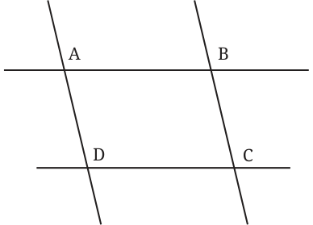
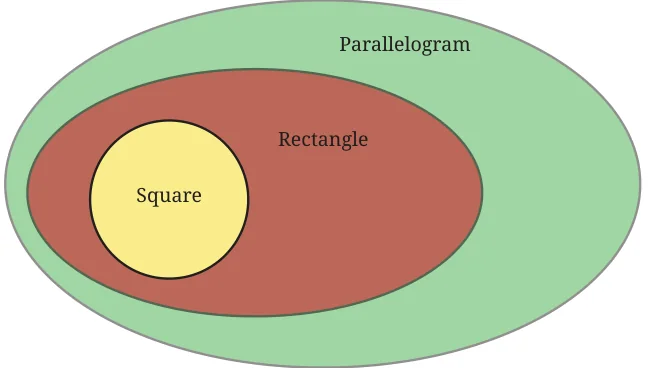
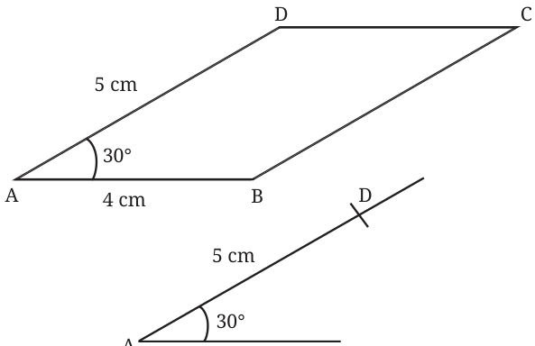
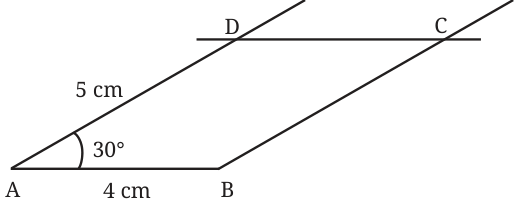
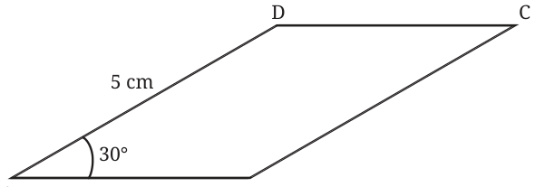
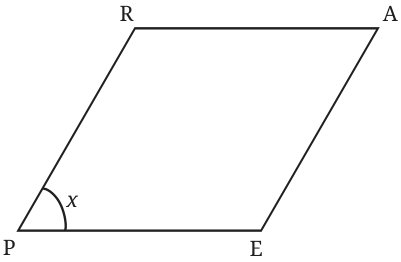
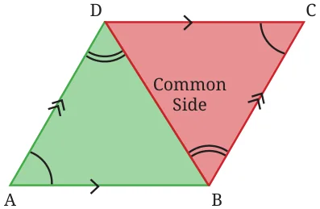
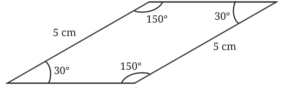
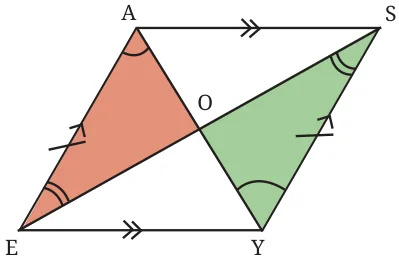

Rectangles (and therefore squares) have parallel opposite sides. Are there quadrilaterals that have parallel opposite sides that are not rectangles? Let us try constructing one. This can be easily done by drawing two pairs of parallel lines, ensuring that they do not meet at right angles.
Construct such a figure by recalling how parallel lines can be constructed using a ruler and a set-square, or a compass and a ruler.

Observe the quadrilateral ABCD. It has parallel opposite sides but is not a rectangle.
Thus, a larger set of quadrilaterals exists in which the opposite sides are parallel. Such quadrilaterals are called parallelograms.
Is a rectangle a parallelogram? A rectangle has opposite sides parallel. So, it satisfies the parallelogram’s definition. Hence, it is indeed a parallelogram. More specifically, a rectangle is a special kind of parallelogram with all its angles equal to \(90 ^{\circ}\) . Let us represent this relation using a Venn diagram.

To understand the relations between the sides and the angles of a parallelogram, let us construct the following figure.

Draw a parallelogram with adjacent sides of lengths 4 cm and 5 cm, and an angle of \(30 ^{\circ}\) between them.
Step 1: Draw line segments \(AB = 4\) cm and \(AD = 5\) cm with an angle of \(30 ^{\circ}\) between them.
Step 2: Draw a line parallel to AB through the point D, and a line parallel to AD through B. Mark the point at which these lines intersect as C.

ABCD is the required parallelogram.
What are the remaining angles of the parallelogram? What are the lengths of the remaining sides? See if you can reason out and/or experiment to figure these out.

Deduction \(6 -\) What can we say about the angles of a parallelogram?
In the parallelogram ABCD, AB||CD, and AD is a transversal to them. \(\angle A + \angle D = 180 ^{\circ}\) (sum of the internal angles on the same side of a transversal). Therefore,

\(\angle D = 180 - \angle A = 180 - 30 = 150 ^{\circ}\) .
Similarly, AD||BC, and AB and CD are transversals to them. 4 cm
So, \(\angle A + \angle B = 180 ^{\circ}\) .
So, \(\angle C + \angle D = 180 ^{\circ}\) .
Using these equations, we get \(\angle B = 150 ^{\circ}\) and \(\angle C = 30 ^{\circ}\) . We see that in this parallelogram, the adjacent pairs of angles add
up to \(180 ^{\circ}\) and opposite pairs of angles are equal.
Thus,
\(\angle A + \angle B = 180 ^{\circ}\) , \(\angle A + \angle D = 180 ^{\circ}\) , \(\angle C + \angle D = 180 ^{\circ}\) , and \(\angle B + \angle C = 180 ^{\circ}\) .
And,
\(\angle A = \angle C\), and \(\angle B = \angle D\).
Since the adjacent angles are the interior angles on the same side of a transversal to a pair of parallel lines, they must add up to \(180 ^{\circ}\) . What about the opposite angles? Will they be equal in all parallelograms? If yes, how can we be sure? Let us take one of the angles to be x. What are the other angles?

Since \(\angle P + \angle R = 180 ^{\circ}\) , \(\angle R = 180 - \angle P = 180 - x\).
Similarly, since \(\angle A + \angle R = 180 ^{\circ}\) ,
\(\angle A = 180 - \angle R = 180 - (180 -\) x) \(= 180 - 180 + x = x\).
Thus, \(\angle P = \angle A = x\). Similarly, we can deduce that \(\angle R = \angle E = 180 - x\). Therefore, this shows that the opposite angles of a parallelogram
are always equal.
Deduction \(7 -\) What can we say about the sides of a parallelogram?
By looking at a parallelogram, it appears that the opposite sides are equal. Can we again use congruence to show this? Which two triangles can be considered for this?

In \(\triangle ABD\) and \(\triangle CDB\), the angles marked with a single arc are equal as they are the opposite angles of a parallelogram. Since AD||BC, and BD is a transversal to it, the angles marked with double arcs are equal as they are alternate angles. So, by the AAS condition, the triangles are congruent, that is, \(\triangle ABD \cong \triangle CDB\).

Therefore, \(AD = CB\), and \(AB = CD\). Thus, the opposite sides of a parallelogram are equal.
Is it wrong to write \(\triangle ABD \cong \triangle CBD\)? Why? From these deductions we can find the remaining sides and angles of the parallelogram.

Let us list the properties of a parallelogram. Property 1: The opposite sides of a parallelogram are equal. Property 2: The opposite sides of a parallelogram are parallel. Property 3: In a parallelogram, the adjacent angles add up to \(180 ^{\circ}\) , and the opposite angles are equal.
Are the diagonals of a parallelogram always equal? Check with the parallelogram that you have constructed. We see that the diagonals of a parallelogram need not be equal. Do they bisect each other (do they intersect at their midpoints)? Reason and/or experiment to figure this out.
Deduction \(8 -\) What is the point of intersection of the two diagonals in a parallelogram?
As in the case of a rectangle, we can find out if the diagonals bisect each other by examining the congruence of \(\triangle AOE\) and \(\triangle YOS\) in the parallelogram EASY.


\(AE = YS\) (as they are the opposite sides of the parallelogram) The angles marked using a single arc are equal, and so are the angles marked using a double arc, since they are alternate angles of parallel lines. Thus, by the ASA condition, the triangles are congruent, that is, \(\triangle AOE \cong \triangle YOS\). Therefore, \(OA = OY\), and \(OE = OS\), since they are corresponding parts of congruent triangles. Thus, O is the midpoint of both diagonals.
Is it wrong to write \(\triangle AOE \cong \triangle SOY\)? Why?
Property 4: The diagonals of a parallelogram bisect each other. Do the diagonals of a parallelogram intersect at a particular angle?